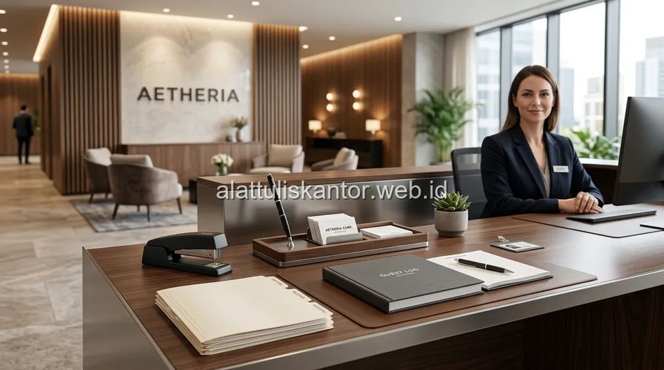

Ruang resepsionis adalah titik pertama yang dilihat tamu, klien, maupun calon mitra bisnis ketika memasuki kantor, sehingga kesan yang tercipta di area ini turut memengaruhi persepsi mereka terhadap profesionalisme keseluruhan perusahaan. Sayangnya, banyak kantor kurang memperhatikan detail perlengkapan ATK di meja resepsionis, sehingga area yang seharusnya menjadi etalase perusahaan justru terlihat seadanya dengan alat tulis yang berantakan atau tidak seragam.
Artikel ini membahas perlengkapan ATK ruang resepsionis yang elegan untuk menciptakan kesan pertama profesional, sekaligus rekomendasi stapler heavy duty yang sering dibutuhkan area administrasi depan untuk menjilid berkas tebal tanpa macet. ATK Prima Distribusi siap membantu kebutuhan paket ATK kantor dan ruang resepsionis perusahaan Anda via WhatsApp di 0889-8964-3555.
Fakta: Survei menunjukkan 70% tamu bisnis membentuk kesan pertama tentang perusahaan dalam 7 detik pertama memasuki ruang resepsionis. Detail kecil seperti kerapian meja dan kualitas alat tulis sangat berpengaruh.
Ringkasan Perlengkapan ATK Ruang Resepsionis yang Elegan
Perlengkapan ATK ruang resepsionis yang elegan sebaiknya mengutamakan tampilan seragam dan minimalis, meliputi: desk organizer dengan desain premium (bukan plastik warna-warni biasa), pen holder dengan pulpen berkualitas untuk tamu menandatangani buku tamu, kotak tisu dan hand sanitizer dengan desain matching, serta buku tamu atau tablet digital untuk pencatatan kunjungan. Untuk kebutuhan penjilidan berkas tebal di meja depan, gunakan stapler heavy duty yang mampu menjilid hingga 100 lembar tanpa macet, alih-alih stapler standar yang mudah tersangkut pada tumpukan kertas tebal.
Mengapa Detail ATK di Resepsionis Memengaruhi Kesan Pertama
Tamu yang menunggu di area resepsionis cenderung memperhatikan detail-detail kecil di sekitar mereka, termasuk kerapian meja resepsionis dan kualitas alat tulis yang tersedia. Meja yang berantakan dengan pulpen murah yang macet saat digunakan tamu untuk mengisi buku tamu dapat menciptakan kesan kurang profesional, bahkan sebelum tamu tersebut bertemu langsung dengan pihak yang mereka kunjungi. Standar kerapian ini selaras dengan penerapan SOP pengadaan ATK tim General Affair dalam mengelola estetika fasilitas kantor.
Perlengkapan ATK Wajib untuk Ruang Resepsionis Elegan
Kategori Estetika Meja
- Desk organizer minimalis dengan warna netral (hitam, abu-abu, atau aksen kayu) yang senada dengan interior kantor.
- Pen holder atau pen tray dengan pulpen premium khusus tamu, bukan pulpen promosi murahan.
- Kotak tisu dan hand sanitizer dengan desain matching set, bukan kemasan asal pakai.
Kategori Administrasi Depan
- Buku tamu dengan cover elegan atau tablet digital untuk pencatatan kunjungan modern.
- Stapler heavy duty untuk menjilid dokumen tebal tanpa macet.
- Map atau folder khusus dari kategori pengarsipan dan penyimpanan untuk menyerahkan dokumen kepada tamu dengan tampilan rapi.
Memilih Stapler Heavy Duty untuk Berkas Tebal
Stapler standar yang biasa digunakan untuk dokumen 10-20 lembar sering kali macet atau bahkan rusak ketika dipaksakan menjilid berkas hingga 100 lembar, yang umum terjadi di meja resepsionis saat menerima dokumen tebal dari kurir atau tamu bisnis. Stapler heavy duty dirancang dengan mekanisme pegas yang lebih kuat dan kapasitas staples yang lebih besar, mampu menembus tumpukan kertas tebal dengan satu kali tekanan tanpa macet di tengah proses.
Tabel Perbandingan: Stapler Standar vs Stapler Heavy Duty
| Parameter | Stapler Standar | Stapler Heavy Duty |
|---|---|---|
| Kapasitas maksimal | 10-20 lembar | Hingga 100-130 lembar |
| Risiko macet pada berkas tebal | Tinggi | Rendah |
| Kekuatan pegas mekanisme | Standar | Diperkuat khusus |
| Estimasi harga | Rp15.000 - Rp30.000 | Rp80.000 - Rp150.000 |
Tips Menata Meja Resepsionis agar Konsisten Elegan
- Pilih palet warna yang konsisten untuk seluruh perlengkapan ATK, senada dengan identitas visual perusahaan, sebagaimana diulas pada panduan paket ATK meja kerja rapi.
- Hindari menumpuk terlalu banyak barang di permukaan meja; simpan cadangan di laci tertutup.
- Ganti pulpen tamu secara berkala untuk memastikan selalu dalam kondisi baik saat dibutuhkan.
- Bersihkan dan rapikan meja resepsionis di akhir hari kerja sebagai bagian dari rutinitas standar kantor.
Studi Kasus: Renovasi Kesan Resepsionis PT Cipta Karya Abadi
PT Cipta Karya Abadi menerima masukan dari beberapa klien bahwa area resepsionis mereka terlihat kurang rapi, dengan pulpen yang sering macet dan stapler standar yang tidak mampu menjilid dokumen kontrak tebal yang sering diterima dari klien. Setelah bekerja sama dengan distributor ATK resmi B2B untuk mengganti seluruh perlengkapan resepsionis dengan set yang lebih elegan dan seragam, serta menambahkan stapler heavy duty di meja depan, kesan pertama yang diterima klien baru meningkat signifikan berdasarkan survei kepuasan yang dilakukan perusahaan tiga bulan setelah perubahan tersebut.
Hasil Nyata: PT Cipta Karya Abadi mencatat peningkatan skor kepuasan klien terhadap kesan pertama kantor sebesar 35% setelah merapikan dan memperbarui perlengkapan ATK ruang resepsionis.
Cara Memesan Paket ATK Ruang Resepsionis untuk Kantor Anda
Untuk melihat ragam produk perkantoran berkualitas termasuk kebutuhan area front office, Anda dapat langsung menjelajahi katalog produk ATK lengkap. Anda juga dapat mengenal profil dan jangkauan layanan kami melalui halaman tentang kami sebelum melakukan pemesanan paket.
Kami menyediakan berbagai pilihan paket ATK kantor yang telah dikurasi dengan desain seragam dan elegan, termasuk stapler heavy duty dan perlengkapan administrasi depan lainnya. Konsultasikan kebutuhan spesifik ruang resepsionis Anda dengan tim kami melalui WhatsApp di 0889-8964-3555 untuk mendapatkan rekomendasi yang tepat sesuai anggaran dan desain interior kantor Anda.
Pertanyaan yang Sering Diajukan (FAQ)
Kesimpulan
Ruang resepsionis bukan sekadar tempat menyambut tamu, melainkan cerminan standar mutu dan kredibilitas korporat. Memilih perlengkapan ATK ruang resepsionis yang serasi, bersih, dan fungsional—seperti pen holder berdesain premium serta stapler heavy duty yang andal—merupakan investasi kecil dengan dampak besar pada reputasi bisnis Anda.